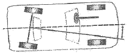
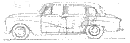
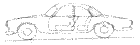
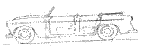
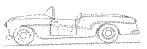
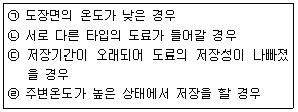
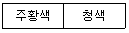

자동차보수도장기능사 (2013-10-12 기출문제)
1과목: 임의 구분
1. 다음 중에서 "1atm"을 단위 환산 했을 때 틀린 것은?
- 1.0332kgf/cm2
- 760mmHg
- 101.3 kpa
- 1.01325mbar
(정답률: 70%)

2. 아래 그림에서 자동차의 기하학적 중심선과 뒤바퀴의 추진선이 이루는 휠 얼라인먼트 각도의 이름은?

- 캠버 각
- 캐스터 각
- 전체 토(toe)각
- 스러스트 각
(정답률: 68%)
3. 다음 중 저항에 대한 설명이 맞는 것은?
- 저항이란 전류가 물질 속에 흐르는 것을 말한다.
- 배선의 단면적이 작아지면 저항도 작아진다.
- 배선의 길이가 길어지면 저항도 커진다.
- 저항의 단위는 A(암페어)이다.
(정답률: 68%)
4. 자동차의 차체 모양에 따른 분류로 리무진의 형상은 어떤 것인가?




(정답률: 89%)
5. 다음 중 힘의 단위로 틀린 것은?
- N
- G
- dyn
- kgf
(정답률: 68%)
6. 다음의 차체 패널 중에서 볼트 온(bolt on)패널로 조립한 것은?
- 센터 필러
- 카울 톱 아우터 패널
- 후드
- 루프
(정답률: 63%)
7. 변속기의 필요성과 거리가 먼 것은?
- 후진이 가능하게 하기 위해
- 엔진을 무부하 상태로 유지하기 위해
- 엔진의 회전력 증대를 위해
- 엔진의 구동력을 감소시키기 위해
(정답률: 72%)
8. 엔진의 배기가스 중에 NOx를 촉매물질에 의해 N2로 변화시키는 장치는?
- 산화 촉매
- 산소 촉매
- 환원 촉매
- 질소 촉매
(정답률: 69%)
9. 좌우 사이드 멤버의 길이가 평행으로 되어있고 그 사이에 몇 개의 크로스 멤버를 연결시킨 프레임은?
- 평행 채널형
- 평행 사각형
- 평행 사변형
- 평행 사다리형
(정답률: 70%)
10. 최근 승용자동차에 많이 사용하고 있는 FR구동방식은?
- 앞 엔진 앞바퀴 구동방식
- 뒤 엔진 앞바퀴 구동방식
- 앞 엔진 뒷바퀴 구동방식
- 뒤 엔진 뒷바퀴 구동방식
(정답률: 84%)
11. 도막을 예리한 칼로 수평, 수직으로 11개씩의 1mm간격으로 선을 그어 총 100개의 칸을 만들고 접착테이프를 붙이고 순간적으로 당겨 부착의 정도를 측정하는 시험법을 무엇이라고 하는가?
- 크로스 컷 시험
- 드로잉 시험
- 에리센 시험
- 스워드 로커 시험
(정답률: 72%)
12. 탈지제를 이용한 탈지작업에 대한 설명으로 틀린 것은?
- 도장면을 종이로 된 걸레나 면걸레를 이용하여 탈지제로 깨끗하게 닦아 이물질을 제거한다.
- 탈지제를 묻힌 면걸레로 도장면을 닦은 다음 도장면에 탈지제가 남아 있지 않도록 해야 한다.
- 도장할 부위를 물을 이용하여 깨끗하게 미세먼지까지 제거 한다.
- 한쪽 손에는 탈지제를 묻힌 것으로 깨끗하게 닦은 다음 다른 쪽 손에 깨끗한 면걸레를 이용하여 탈지제가 증발하기 전에 도장면에 묻은 이물질과 탈지제를 깨끗하게 제거 한다.
(정답률: 79%)
13. 퍼티를 한 번에 두껍게 도포를 하면 발생할 수 있는 문제점으로 틀린 것은?
- 부풀음이 발생할 수 있다.
- 핀홀, 균열 등이 생기기 쉽다.
- 연마 및 작업성이 좋아진다.
- 부착력이 떨어진다.
(정답률: 87%)
14. 공기압력을 일정하게 유지시키고 공기를 정화하며 수분을 제거하게 되어있는 구성부품은?
- 에어 크리너
- 에어 건조기
- 에어 트랜스포머
- 자동배수기
(정답률: 75%)
15. 다음 중 흑색 안료인 카본 프레이크의 결정체로서 일반 흑색계 안료보다 약 5배가 큰 판모양으로 광택이 있고 어두운 회색을 나타내는 안료는?
- 그라파이트
- 마이크로 티탄
- 티타늄 다이옥사이드
- (펄)마이카
(정답률: 57%)
16. 보수도장에서 열처리 후 신너를 묻힌 걸레를 문질러서 페인트가 묻어나는 원인은?
- 경화제 부족 및 경화불량 때문에
- 지정 시간보다 오래 열처리를 해서
- 도막이 너무 얇아서
- 래커 신너를 사용하여 도장을 해서
(정답률: 74%)
17. 상도 도장 후에 도장면에 반점이 발생하는 결함은?
- 워터 스폿(물자국)
- 지문 자국
- 메탈릭 얼룩
- 흐름(sagging)
(정답률: 69%)
18. 다음 중 워시 프라이머의 도장작업에 대한 설명으로 적합하지 않은 것은?
- 추천 건조도막두께로 도장하기 위해 4~6도장
- 2액형 도료인 경우, 주제와 경화제의 혼합비율을 정확하게 지켜 혼합
- 혼합된 도료인 경우, 가사시간이 지나면 점도가 상승하고 부착력이 떨어지기 때문에 재사용은 불가능
- 도막을 너무 두껍게도 얇게도 도장하지 않도록 한다.
(정답률: 78%)
19. 건조가 불충분한 프라이머 서페이이서를 연마할 때 발생되는 문제점이 아닌 것은?
- 연삭성이 나쁘고 상처가 생길 수 있다.
- 연마 입자가 페이퍼에 끼어 페이퍼의 사용량이 증가한다.
- 물 연마를 해도 별 문제가 발생하지 않는다.
- 우레탄 프라이머 서페이서를 물 연마하면 경화제의 성분이 물과 반응하여 결함이 발생할 경우가 많다.
(정답률: 83%)
20. 다음 중 색상을 적용하는 동안 스프레이건을 좌우로 이동시켜 작업하는 블렌딩 도장의 결과 아닌 것은?
- 도막두께의 불규칙
- 불균일한 건의 조정
- 불균일한 색상
- 도막 질감의 불균일
(정답률: 55%)
2과목: 임의 구분
21. 자동차 주행중 작은 돌이나 모래알 등에 의한 도막의 벗겨짐을 방지하기 위한 도료는?
- 방청 도료
- 내스크래치 도료
- 내칩핑 도료
- 바디실러 도료
(정답률: 64%)
22. 중력식 스프레이건에 대한 설명이 아닌 것은?
- 도료 컵이 건의 상부에 있다.
- 도료 점도에 의한 토출량의 변화가 적다.
- 대량생산에 필요한 넓은 부위의 작업에 적합하다.
- 수직 수평 작업 모두 용이하다.
(정답률: 58%)
23. 녹(rusting)이 발생하였다. 원인으로 틀린 것은?
- 리무버 사용 후 세척을 제대로 못했을 경우
- 피도면의 표면처리(방청)작업을 제대로 못했을 경우
- 도막의 손상부위로 습기가 침투하였을 경우
- 구도막면의 연마가 미흡한 경우
(정답률: 71%)
24. 도료 저장 중(도장 전)도료분리 현상의 발생 원인을 모두 고른 것은?

- ㉠, ㉡, ㉢
- ㉠, ㉡, ㉣
- ㉠, ㉢, ㉣
- ㉡, ㉢, ㉣
(정답률: 73%)
25. 신차용 자동차 도료에 사용되며 에폭시 수지를 원료로하여 방청 및 부착성 향상을 위해 사용하는 도료는?
- 전착도료
- 중도도료
- 상도베이스
- 상도투명
(정답률: 68%)
26. 기본적인 조색작업 순서로 알맞은 것은?
- 견본색확인-원색선정-배합비 확인-혼합-테스트시편도장-색상비교
- 배합비 확인-견본색 확인-원색선정-혼합-테스트시편도장-색상비교
- 견본색 확인-테스트시편도장-원색선정-배합비 확인-혼합-색상비교
- 견본색 확인-배합비 확인-혼합-색상비교-테스트시편도장-원색선정
(정답률: 67%)
27. 메탈릭 도료의 조색에 관련된 사항 중 틀린 것은?
- 조색과정을 통해 재 수리 작업을 사전에 방지하는 목적이 있다.
- 여러 가지 원색을 혼합하여 필요로 하는 색상을 만드는 작업이다.
- 원래 색상과 일치하도록 하기 위한 작업으로 상품가치를 향상시킨다.
- 원색에 대한 특징을 알아둘 필요는 없다.
(정답률: 88%)
28. 펄 베이스의 도장 방법으로 틀린 것은?
- 플래시 타임을 충분히 준 다음 도장한다.
- 에어블로잉 하지 않고 자연건조시킨다.
- 에어블로잉 후 자연건조시킨다.
- 실차의 도장 상태에 맞도록 도장한다.
(정답률: 60%)
29. 플라스틱 도장의 목적 중 틀린 것은?
- 방진성을 부여한다.
- 내약품성, 내용제성을 향상시킨다.
- 표면의 내마모성을 향상시킨다.
- 오염성을 향상시킨다.
(정답률: 82%)
30. 스프레이건의 조건에 따라 외관에 대한 설명으로 틀린 것은?
- 스프레이건의 노즐 구경이 적은 것을 사용하면 외관이 밝다.
- 도료의 토출량을 많게 하면 외관이 어둡게 된다.
- 패턴 폭을 좁게 도장하면 외관이 밝아진다.
- 스프레이건의 공기압력을 높게 하면 외관이 밝게 된다.
(정답률: 62%)
31. 자동차 도장 기술자에 의한 색상차이의 원인 중 “색상이 밝게”나왔다. 그 원인 설명 중 맞는 것은?
- 신너의 희석량이 많다.-공기압력이 높다.
- 신너의 희석량이 많다.-공기압력이 낮다.
- 신너의 희석량이 적다.-공기압력이 높다.
- 신너의 희석량이 적다.-공기압력이 낮다.
(정답률: 71%)
32. 다음 중 편심원(이중 회전)운동 하는 방식의 샌더는?
- 기어 액션 샌더
- 오비탈 샌더
- 싱글 액션 샌더
- 더블 액션 샌더
(정답률: 84%)
33. 플라스틱 재료 중에서 열경화성 수지의 특징이 아닌 것은?
- 가열에 의해 화학변화를 일으켜 경화 성형한다.
- 다시 가열해도 연화 또는 용융되지 않는다.
- 가열 및 용접에 의한 수리가 불가능하다.
- 가열하여 연화 유동시켜 성형한다.
(정답률: 51%)
34. 도장표면에 오일, 왁스, 물 등이 있는 상태에서 도장작업 시 나타나는 현상은?
- 오렌지필
- 점도상승
- 크레터링
- 흐름
(정답률: 54%)
35. 프라아머 서페이서 건조가 불충분했을 때 발생하는 현상이 아닌 것은?
- 샌딩을 하면 연마지에 묻어나서 상처가 생긴다.
- 상도의 광택부족
- 우수한 부착성
- 퍼티자국이나 연마자국
(정답률: 83%)
36. 피도체에 도장 작업시 필요 없는 곳에 도료가 부착하지 않도록 하는 작업은?
- 마스킹 작업
- 조색 작업
- 블랜딩 작업
- 클리어 도장
(정답률: 81%)
37. 습도가 낮은 도장실에서 분무패턴 폭을 넓게 도장하였을 때 메탈릭의 정면색상에 대한 설명으로 맞는 것은?
- 색상이 밝아진다.
- 색상이 어두워진다.
- 색상에 변화가 없다.
- 명도가 낮아진다.
(정답률: 64%)
38. 광택 작업 공정 중에서 칼라 샌딩 공정 시 사용될 수 있는 적절한 연마지는?
- P80
- P400
- P600
- P1200
(정답률: 63%)
39. 해머 작업시 주의사항으로 틀린 것은?
- 서로 마주보고 작업해서는 안된다.
- 해머작업은 손바닥에 물집이 생기므로 반드시 장갑을 끼고 작업한다.
- 해머를 휘두르기 전에 반드시 주위를 살핀다.
- 해머로 녹슨 것을 때릴 때에는 보안경을 착용한다.
(정답률: 87%)
40. 차량 시험기기에 대한 설명으로 틀린 것은?
- 시험기기 전원의 종류와 용량을 확인한 후 전원 플러그를 연결한다.
- 시험기기의 보관은 깨끗한 곳이면 아무 곳이나 좋다.
- 눈금의 정확도는 수시로 점검해서 0점을 조정해 준다.
- 시험기기의 누전 여부를 확인한다.
(정답률: 87%)
3과목: 임의 구분
41. 중량물을 들어 올리거나 내릴 때 손이나 발이 중량물과 지면 등에 끼어 발생하는 재해는?
- 파열
- 충돌
- 전도
- 협착
(정답률: 81%)
42. 드릴머신 작업의 안전사항이다. 틀린 것은?
- 드릴은 마모나 균열이 있는 것은 사용하지 않는다.
- 가볍고 작은 물건은 손으로 잡고 작업한다.
- 드릴의 탈착은 회전이 멈춘 다음 행한다.
- 감기기 쉬운 복장은 피한다.
(정답률: 86%)
43. 고압가스 용기의 도색 중 옳게 표시된 것은?
- 산소-적색
- 수소-흰색
- 아세틸렌-노란색
- 액화암모니아-파란색
(정답률: 68%)
44. 싱글액션샌더 연마작업 중 가장 주의해야 할 신체부위는?
- 머리
- 발
- 손
- 팔목
(정답률: 80%)
45. 유기용제로 인한 중독을 예방하기 위한 주의사항으로 맞는 것은?
- 유기용제의 용기는 사용 중에 개방한다.
- 작업에 필요한 양보다 넉넉히 반입한다.
- 유기용제의 증기는 가급적 멀리한다.
- 유기용제는 피부에 직접 닿아도 무방한다.
(정답률: 75%)
46. 도장작업장에서의 작업 준비사항이 아닌 것은?
- 박리제를 이용한 구도막제거는 밀폐된 공간에서 안전하게 작업한다.
- 유기용제 게시판, 구분표시를 확인한다.
- 조색실 등의 희석제를 많이 사용하는 특정 공간에서는 방폭 장치를 사용하여야 한다.
- 작업공간에 희석제 증기가 과도하지 않은가를 확인하고 통풍을 시킨다.
(정답률: 74%)
47. 공기압축기의 설치 장소 내용으로 맞는 것은?
- 건조하고 깨끗하며 환기가 잘 되는 장소에 수평으로 설치한다.
- 방폭벽으로 사용하지 않아도 된다.
- 벽면에 거리를 두지 않고 설치한다.
- 직사광선이 잘 드는 곳에 설치한다.
(정답률: 85%)
48. 인화성 액체의 신중한 취급방법으로 틀린 것은?
- 작업시 인화성 액체 등을 바닥에 쏟지 않도록 주의한다.
- 손이나 면포에 용제가 묻어 있는 상태로 방치하지 않도록 주의한다.
- 인화성 물질은 방화 설비된 캐비넷에 보관하지 않도록 한다.
- 작업장내 충분한 환기 여건 조성을 한다.
(정답률: 81%)
49. 다음 중 채도에 관한 설명으로 틀린 것은?
- 색의 선명도를 나타낸 것이다.
- 채도는 "C"로 표시한다.
- 색의 밝고 어두운 정도를 나타낸다.
- 채도가 높고 강한 색을 고채도의 색이라 한다.
(정답률: 68%)
50. 색의 조화를 설명한 것으로 틀린 것은?
- 색상을 한색계로 하면 서늘하고 정적이다.
- 명도가 높은 색을 주로 하면 밝고 경쾌하다.
- 색상과 명도를 같게 하면 동적이고 활기가 있다.
- 채도가 높고 강한 색을 고채도의 색이라 한다.
(정답률: 58%)
51. 다음 중 대비 효과가 가장 강한 색은?
- 녹색-파랑
- 주황-노랑
- 보라-파랑
- 빨강-청록
(정답률: 70%)
52. 색의 중량감에 가장 크게 영향을 미치는 것은?
- 채도
- 색상
- 보색
- 명도
(정답률: 74%)
53. 먼셀 색체계의 다섯 가지 기본색상이 아닌 것은?
- 보라
- 파랑
- 주황
- 초록
(정답률: 70%)
54. 회색 양복에 흰색 와이셔츠를 입고 짙은 빨강의 넥타이를 맸다면 그 넥타이는 한층 짙게 보인다. 어떤 대비 현상이 가장 강하게 나타났기 때문인가?
- 색상대비
- 보색대비
- 계시대비
- 채도대비
(정답률: 53%)
55. 다음 중 중성적이며 수동적 경향의 색으로 가장 휴식적인 아늑한 색으로 느껴지는 것은?
- 적색
- 검정색
- 녹색
- 보라색
(정답률: 81%)
56. 먼셀의 표시법 중 명도단계에 대한 설명으로 옳은 것은?
- 명도 0의 검정에서 명도 10의 흰색까지 11단계
- 명도 1의 검정에서 명도 10의 흰색까지 10단계
- 명도 1의 검정에서 명도 14의 흰색까지 14단계
- 명도 1의 검정에서 명도 20의 흰색까지 20단계
(정답률: 64%)
57. 물리보색과 심리보색은 약간의 차이를 갖는다. 다음 중 심리보색을 설명한 것은?
- 중간혼합 시 빨간색을 나타내는 색을 말한다.
- 보색잔상에 의해 나타나는 색을 말한다.
- 가법혼합 시 무채색을 나타내는 색을 말한다.
- 원판회전 혼합에 의해 무채색을 나타내는 색을 말한다.
(정답률: 55%)
58. 다음과 같은 색채조화는?

- 인접색 조화
- 반대색 조화
- 근접보색의 조화
- 등간격 3색의 조화
(정답률: 67%)
59. 인쇄잉크, 셀로판지 등과 같이 명도, 채도가 처음 두색의 평균 명도보다 낮아지는 색혼합 방법은?
- 감산혼합
- 가산혼합
- 중간혼합
- 병치혼합
(정답률: 59%)
60. 색광혼합에 대한 설명으로 옳은 것은?
- 초록과 파랑의 염료를 혼합하면 밝은 연두색이 된다.
- 빨강 전등과 녹색 전등 빛을 혼합하면 노랑 빛이 되고 밝아진다.
- 물감의 빨강과 파랑을 혼합하면 보라가 되며 명도는 높아진다.
- 팽이 표면을 빨강, 파랑, 녹색을 나누어 칠하고 이것을 회전하면 밝은 무채색이 된다.
(정답률: 61%)
1atm은 대기압을 의미하며, 이는 지표면에서 바다수면까지의 대기의 무게로 인해 발생하는 압력입니다. 이 압력은 다양한 단위로 표현될 수 있습니다.
- 1atm = 760mmHg (수은기압)
- 1atm = 101.3 kPa (킬로파스칼)
- 1atm = 1.01325 bar (바)
- 1atm = 1,013.25 mbar (밀리바)
따라서, 1.01325mbar은 1atm을 나타내는 올바른 단위입니다.
하지만 1.0332kgf/cm2은 대기압을 나타내는 단위가 아닙니다. 이는 기압을 힘의 단위로 표현한 것으로, 대기압과는 다른 개념입니다.